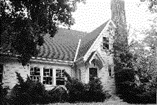

|
|
|
|
Ohiopyle International Hostel (closed)
|
|
in Fayette County in South Western Pennsylvania
|
|
Ohiopyle Hostel
The Ohiopyle Hostel was located on the Ferncliff Peninsula in Ohiopyle
State Park in Ohiopyle, Pennsylvania, and was a short 5-minute walk
from the Youghiogheny ("Yough") River and the town of Ohiopyle.
The hostel had 24 beds available, including one private family room and also
one semi-private room. There were spacious grounds around the hostel with
picnic tables and a bonfire ring. Ample parking was available.
Inside, there was a hosteller's kitchen, dining room and a large common room
equipped with games, puzzles, books and magazines.
|
 |
Local features and attractions include:
Overnight Rates:
-
$15 per night for Hostelling International members
-
$18 per night (includes $3 guest membership) for non-members
-
Children ages 4-17 and traveling with their parents were $8.00.
-
Children 3 and under were free.
-
$5 per adult extra for first floor family room which sleeps 5 people
-
$5 per adult extra for second floor semi-private room which sleeps 2 people
(because this room was off of a dorm room, it was appropriate for 2 males or 2
females).
Hours:
We were open from 5 to 10 pm Thursdays through Mondays for guests to check-in or make reservations.
Our closed days were Tuesday and Wednesdays. Our check-out time was 9:30 am to allow
our guests to see the areas attractions.
Reservations:
Call, fax or e-mail the hostel for reservations (724-329-4476) . Your best chance of talking
with someone was to call between
5 pm and 10 pm. If no one was there you may leave a message.
Ferncliff Peninsula
Post Office Box 99
Ohiopyle PA 15470
724-329-4476 (phone and fax)
hiohiopyle@stargate.net
Kelly and Steve Miller, Manager
Directions:
-
From Pittsburgh
-
Take the Pennsylvania turnpike to the Donegal exit. About 75 miles and
90 minutes.
-
From Washington DC
-
Take I-70 to the Pennsylvania Turnpike to the Donegal Exit. About 4 hours.
-
From the Donegal Exit of the Pennsylvania Turnpike
-
Turn left (east) after leaving the toll booth, and head east on Route 31. Turn
right (south) on Route 711. At the T intersection turn left (south) on Route 381. After entering the park, watch
for the railroad tracks at the end of a long hill. Turn right after the tracks
into a large parking lot (don't cross the bridge that goes into town).
Follow the chain link fence all the way back; our driveway was at the end of the
parking lot on the right.
-
From the south
-
Take Route 40 (the National Pike) and turn north on Route 381. Drive through the
town of Ohiopyle and turn left immediately after crossing the bridge over the
Youghiogheny into a large parking lot. Follow the chain link fence all the
way back; our driveway was at the end of the parking lot on the right.
"To provide inexpensive educational travel, intercultural understanding,
and an understanding of the natural environment through hostels, hostelling,
and outdoor recreation."
Pittsburgh Council | Activities
Program | Comments/Questions
This page was last updated January 21, 2006